Philsophy statement from the website:
Chataigne is a free, open-source software made with one goal in mind : create a common tool for artists, technicians and developers who wish to use technology and synchronize software for shows, interactive installations or prototyping. It aims to be as simple as possible for basic interactions, but can be easily extended to create complex interactions.
After installing the software, and upon opening it for the first time, you should be greeted with a little tutorial. It will walk you through on how to play an audio file using a keyboard stroke. Go ahead and follow it.
In the inspector window, you can specify a key that will trigger a consequence.
The keypress is our input (That Chataigne is listening for), and our consequence is our programmed result of that interaction.
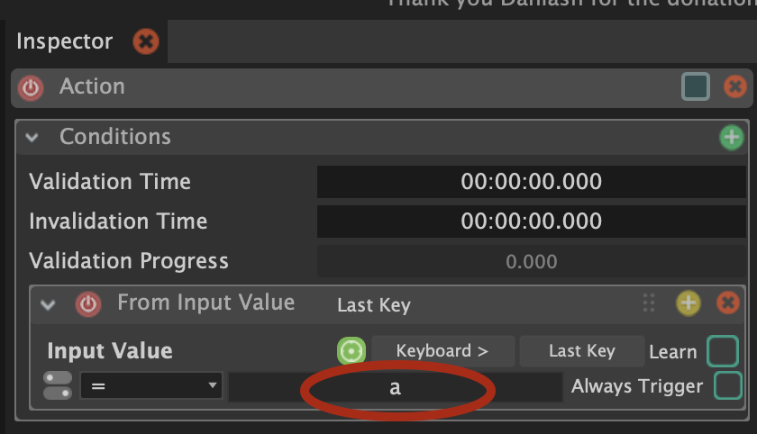
Right below this, is the consequence section.
As the tutorial shows, you can add a consequence by pressing on the “+” button.
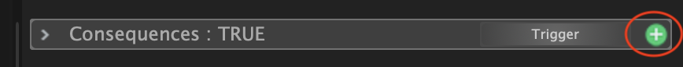
Select:
+ > Sound Card > Play Audio File
Now select the audio file you want to play:
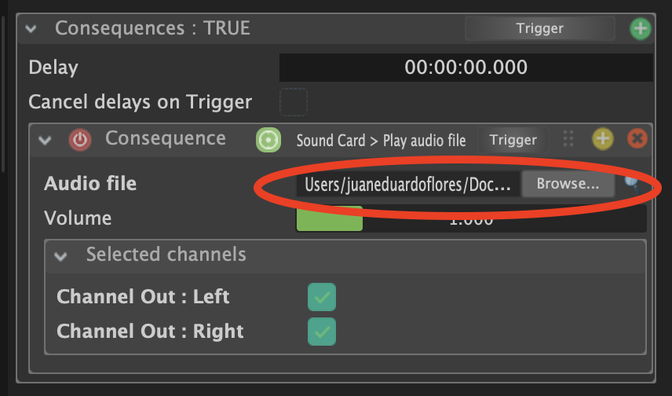
If you can successfully play an audio file with your selected key, then we can move on to using an arduino digital input.
Add another module called “Serial”:
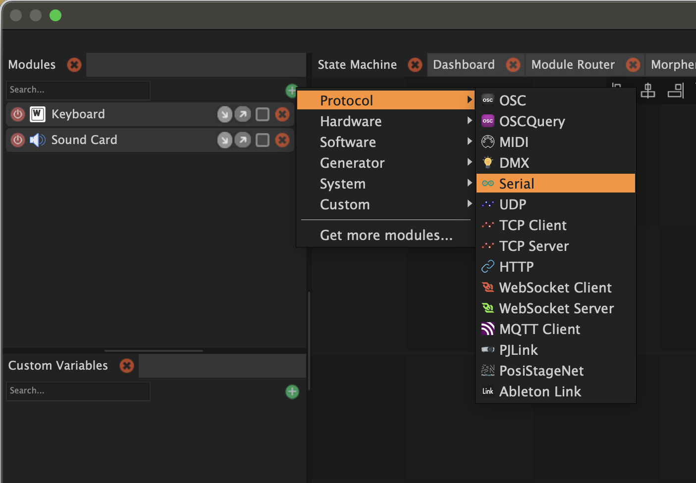
Upload this sketch to your Arduino:
int digitalSensor;
void setup() {
pinMode(2, INPUT);
Serial.begin(115200);
}
void loop() {
digitalSensor = digitalRead(2);
Serial.print("A ");
Serial.println(digitalSensor, DEC);
delay(10);
}After it is finished, quit Arduino and go back to Chataigne.
With the module selected, find the port drop down menu in the inspector window:
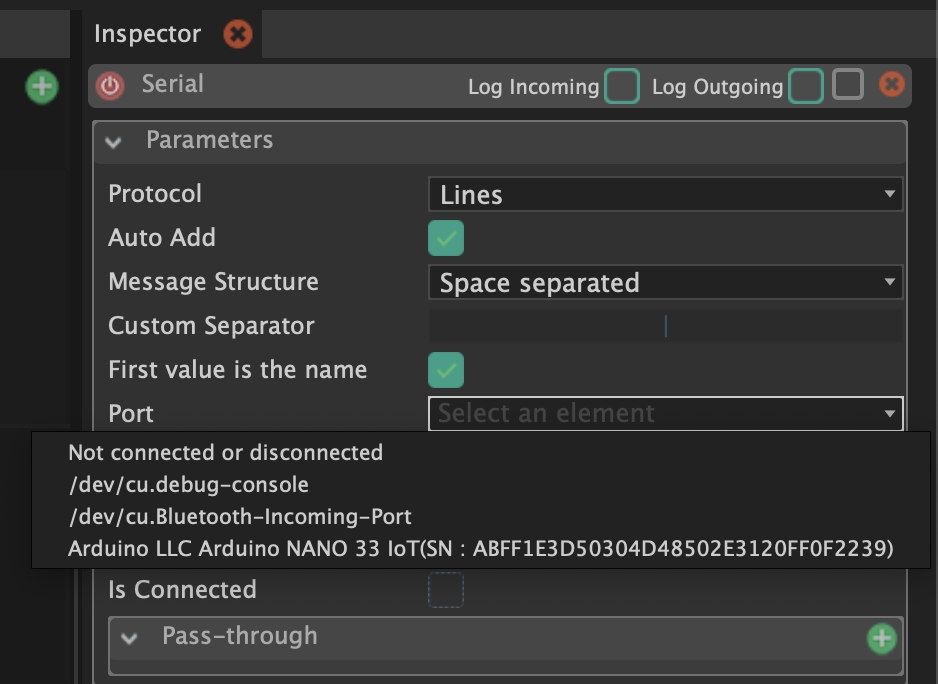
And select the port that your Arduino is connected to.
NoteOnly one app can be connected to Arduino port at a time, which is why it is important to make sure Arduino is closed.
If you don’t, you might see this error message:
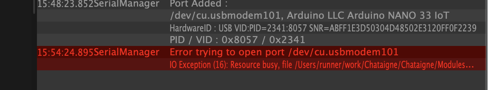
Click the action state again:
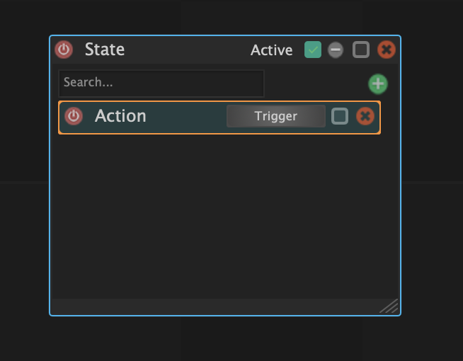
And navigate to the inspector window:
Locate the “From Input Value” window inside “Conditions”. If you still have the Keyboard keystroke listening input, remove it with the “x” button on the top right.
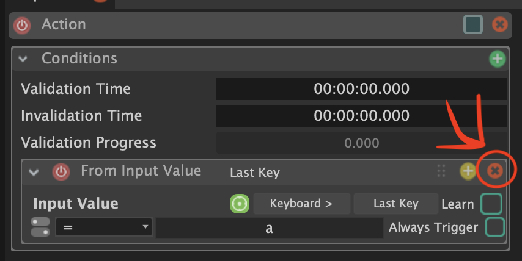
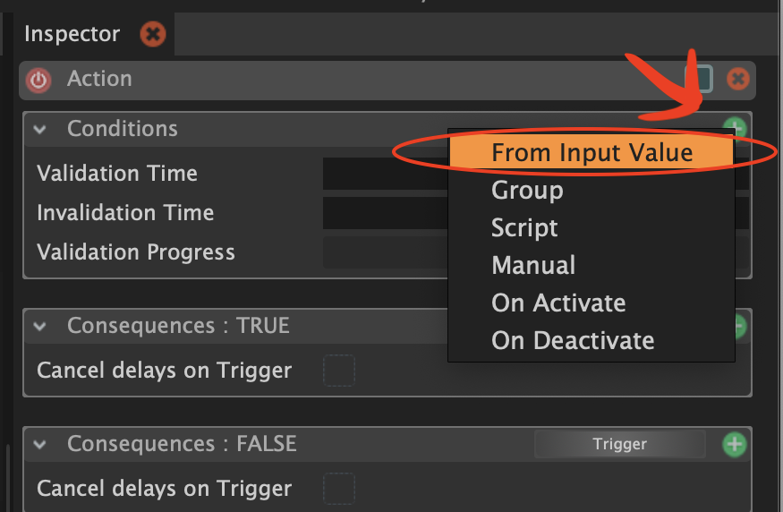
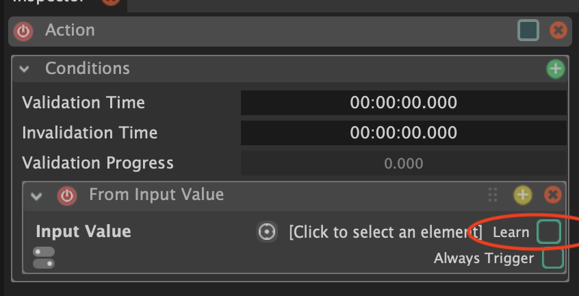
If you check the “Learn” box, it will automatically attempt to listen to any input reading, and assume that this is the interaction you want (the sensor that you want to use).
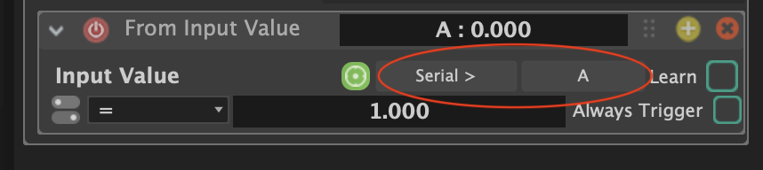
It has found that there is a value A being received, followed by a number.
Pressing your button will result in the input window highlighting in green when the condition is met.
Here you can change the condition operation. In my case, it by default made the condition of:
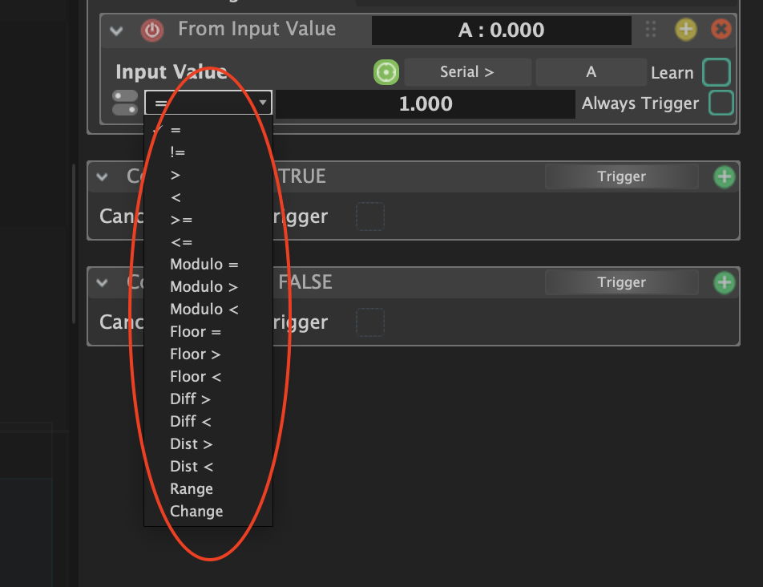
if A is equal to 1.000, then trigger something
This button makes it easy to create a toggle. When button is pressed, the state is toggled. In other words, like a light switch.
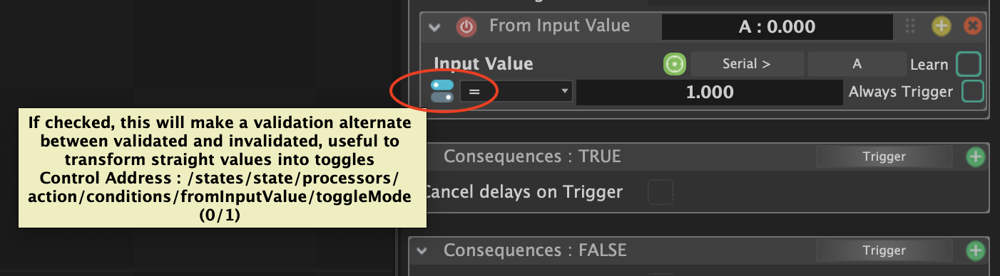
Now for the consequence:
The setup for playing an audio file is exactly the same as when we did it for the keyboard press!
Notice that you can also do something if the condition is FALSE. For example, you can play one sound when condition is TRUE (buttonState is 1 or HIGH), and another when condition is FALSE (buttonState is 0 or LOW).
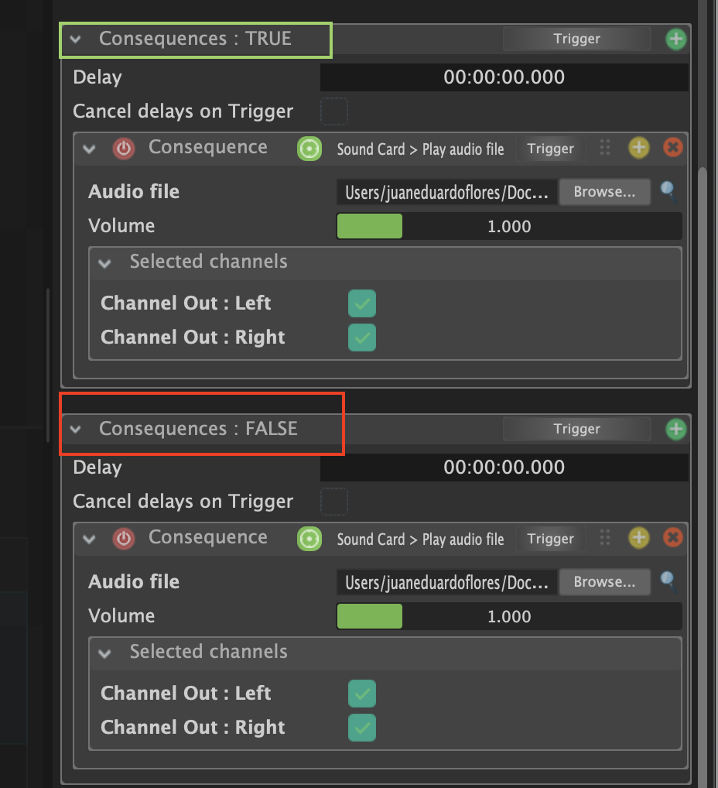